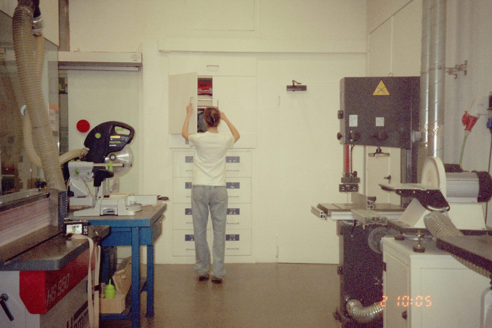
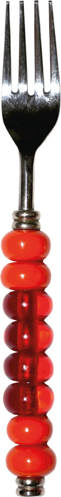
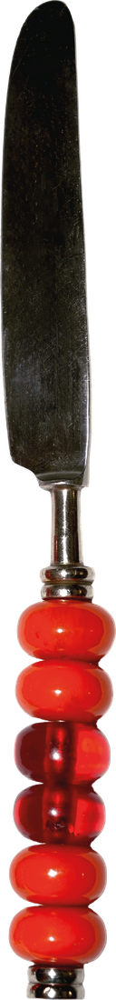

Paula Galli Daher
A Mexican product designer living in Barcelona, in my fourth year at Elisava.
Education
- ELISAVA, Barcelona School of Design and Engineering (2023 – Present)
Undergraduate Degree in Design and Innovation — Product Design - Pratt Institute, New York (Aug 2025 – Jan 2026)
Exchange semester, Industrial & Product Design - St. Andrew’s College, Cambridge (Aug – Dec 2019)
Study abroad program
Experience
- Casa Bellota (2025 – Present)
Branding, concept development, graphic design and photography - Funky Bakers (2025 – Present)
Brand and content design — social media content, menu redesign, graphic pieces and collaborations
Recognitions
- Finalist, Foodture Sustainable Innovation Awards 2023, for the project OATMIC
Courses & Workshops
- Figma Design Course — Better School (2026)
- Semiology of Everyday Life (2020 – 2024)
- Ceramics course at Terra i Pell (6 months, 2023)
Software
- Adobe InDesign — Advanced
- Rhino — Intermediate
- Adobe Photoshop — Intermediate
- Adobe Illustrator — Intermediate
- Fusion 360 — Intermediate
- Figma — Intermediate
- AutoCAD — Basic
Other Skills
- Sketching
- Photography
- Model making
- Video making
Languages
- Spanish — Native
- English — Advanced (TOEFL 95, CEFR C1)
- Catalan — Basic